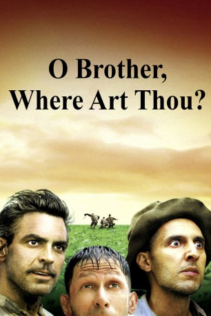
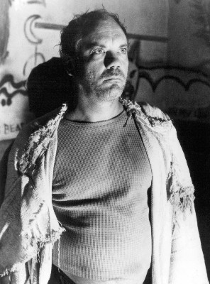
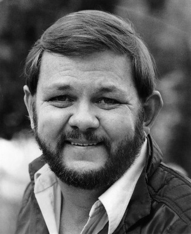
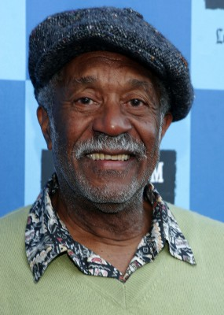

#2207 O Brother, Where Art Thou? - Eine Mississippi-Odyssee
Alternativ: O Brother, Where Art Thou?
Auszeichnungen: für 2 Oscars nominiert 1 GoldenGlobes gewonnen
 
 IMDB-Wertung: 7.8 / 10
IMDB-Wertung: 7.8 / 10  Metascore: 69
Metascore: 69 
Ulysses Everett McGill führt eine Dreierbande von geistig etwas schwerfälligen Kettensträflingen an, die in der Depressionszeit durch das ländliche Mississippi streunen und dabei eine Reihe haarsträubender Abenteuer erleben: Ulysses verspricht seinen Kameraden einen versteckten Goldschatz, die Beute eines Überfalls, doch der Weg dorthin ist weit und von zahlreichen Begegnungen bestimmt. Da ist der schwarze Gitarrist, der seine Seele dem Teufel verkauft hat und mit den drei Sträflingen eine Platte aufnimmt, die zum Überraschungshit wird. Da sind die verführerischen Sirenen am Flussufer, der brutale Zyklop als herrlicher hinterhältiger Gauner und andere. Eine Szene führt zur nächsten, die Gefährten verlieren sich und finden sich wieder, kommen an Geld und werden darum betrogen. Irgendwann geht bei tauchenden Hunden, Propaganda-Zwergen und einer KuKluxKlan-Parade das eigentliche Ziel von Ulysses' Reise verloren....
Jahr: 2000
Dauer: 106 Minuten
FSK: 12
Land: England Studio: UIPTonspuren: DTS - ,
Untertitel: Deutsch,
Auflösung: 1080p (1920x824) Größe: 6737 MB
Genre: Musik, Komödie, Krimi
Regisseur:  Joel Coen,
Joel Coen,  Ethan Coen
Ethan Coen
Drehbuch: Homer, Ethan Coen, Joel Coen
Soundtrack: T Bone Burnett
Darsteller:
 George Clooney als Everett
George Clooney als Everett John Turturro als Pete Hogwallop
John Turturro als Pete Hogwallop Tim Blake Nelson als Delmar O'Donnell
Tim Blake Nelson als Delmar O'Donnell John Goodman als Big Dan Teague
John Goodman als Big Dan Teague Holly Hunter als Penny
Holly Hunter als Penny- Chris Thomas King als Tommy Johnson
 Charles Durning als Pappy O'Daniel
Charles Durning als Pappy O'Daniel Michael Badalucco als George Nelson
Michael Badalucco als George Nelson Wayne Duvall als Homer Stokes
Wayne Duvall als Homer Stokes- Ed Gale als The Little Man
 Ray McKinnon als Vernon T. Waldrip
Ray McKinnon als Vernon T. Waldrip-  Daniel von Bargen als Sheriff Cooley
-  Royce D. Applegate als Man with Bullhorn
 Frank Collison als Wash Hogwallop
Frank Collison als Wash Hogwallop-  Lee Weaver als Blind Seer
 Stephen Root als Radio Station Man
Stephen Root als Radio Station Man- Mia Tate als Siren
- Musetta Vander als Siren
- Christy Taylor als Siren
- Lindsey Miller als Wharvey Gal
 Dan Andreiu als KKK Member , uncredited
Dan Andreiu als KKK Member , uncredited- Seth Bailey als Banquet Patron, Cigar Smoker , uncredited
- Billy W. Blackwell als Rally and Banquet Patron , uncredited
- Ryder Davis als Klansman , uncredited
 Geoffrey Gould als Head of Mob , uncredited
Geoffrey Gould als Head of Mob , uncredited- Nathaniel Lee Jr. als Ice Boy with Straw Hat , uncredited
- Lamar Lott als Rally Attendee , uncredited
- John Wilkie als Klansman / choreographer , uncredited
- Del Pentecost als Junior O'Daniel
- J.R. Horne als Pappy's Staff
- Brian Reddy als Pappy's Staff
- Quinn Gasaway als Boy Hogwallop
- Millford Fortenberry als Pomade Vendor
- John Locke als Mr. French
- Gillian Welch als Soggy Bottom Customer
- A. Ray Ratliff als Record Store Clerk
- April Hardcastle als Waitress
- Michael W. Finnell als Interrogator
- Georgia Rae Rainer als Wharvey Gal
- Marianna Breland als Wharvey Gal
- Natalie Shedd als Wharvey Gal
 John McConnell als Woolworths Manager
John McConnell als Woolworths Manager- Issac Freeman als Gravedigger
- Wilson Waters Jr. als Gravedigger
- Robert Hamlett als Gravedigger
- Willard Cox als Cox Family
- Evelyn Cox als Cox Family
- Suzanne Cox als Cox Family
- Sidney Cox als Cox Family
- Buck White als The Whites
Datei: X:\2000\O Brother, Where Art Thou - Eine Mississippi-Odyssee (2000, FSK12, 1920x824).mkv seit 21.10.2015
Festplatte: HD 1996-2002
 Es gibt insgesamt 82 Filme in der Gruppe '2000'
Es gibt insgesamt 82 Filme in der Gruppe '2000'